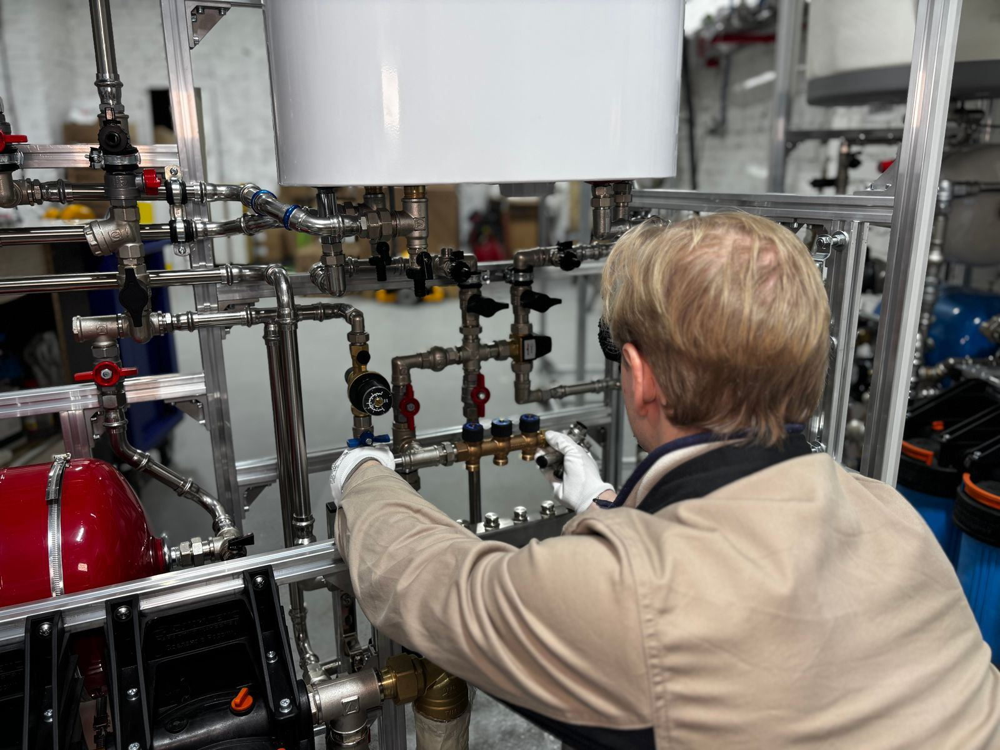

Most water heaters do not simply wear out; they rust out or scale up, and both problems can be held off for years. As water heats, dissolved minerals come out of the water and settle into a layer of sediment on the tank floor. On a gas unit, that layer insulates the water from the burner, so the steel runs hotter and the tank starts to rumble and pop. On an electric unit, it buries the lower element until the element burns out. Meanwhile the anode rod, a metal rod designed to corrode so the tank does not, dissolves a little every month. Once it is gone, the tank itself becomes the target. In Newton, MA, we see this pattern constantly, and most of it was preventable.
The work is hands-on and specific. We drain the tank and flush out sediment until the water runs clean. We pull the anode rod to see how much protection remains and replace it when needed. We lift the T&P valve lever to confirm it opens, then watch it reseat without dripping. For gas equipment, we inspect the burner and flame, pilot or ignition parts, thermocouple or flame sensor, and the vent and draft. For electric equipment, we meter the elements and check the thermostats and wiring. Then we verify the expansion tank still holds its air charge, confirm a safe temperature setting near 120 degrees, and look over every fitting for early signs of a leak.
Tankless water heaters have their own maintenance needs. Scale builds up inside the heat exchanger, especially in hard water, and eventually triggers flow problems, fluctuating temperatures, and error codes. We flush the heat exchanger with a pump and descaling solution through the service valves, clean the inlet filter, check the venting and condensate line on condensing models, and review the unit's error history. At the end of any visit, you get a plain-language report of what we found. Call (617) 209-6516 to schedule water heater maintenance in Newton before a small issue turns into a cold shower.
Our two most requested services are Water Heater Repair in Newton and Water Heater Replacement in Newton. That's the place to start for most homes.

Signs You Need Water Heater Maintenance in Newton
A heater that is starting to struggle rarely hides it for long, and the clues are easy to spot once you know them. Watch for these telltale signs that professional help is needed:
- Water in the drain pan or on the floor near the heater
- Energy bills creeping up with no change in hot water use
- Rumbling, popping, or crackling from the tank as it heats
- Hot water that looks cloudy or rust-colored
- Hot water with a sulfur odor
- A tankless unit showing error codes or fluctuating temperatures
- No memory of the last time the water heater was serviced
- Hot water running out sooner than it used to
Small Symptoms, Big Consequences
A little rust-colored water or a relief valve that drips now and then can be the first hint of a tank that is close to the end. At the first hint of a problem, reach out to Newton Water Heater at (617) 209-6516 and we'll take a look.
Get Water Heater Maintenance Handled Today
Our experienced technicians are standing by to help.
Get Help: (617) 209-6516Common Questions We Hear
Why Hire a Professional for Water Heater Maintenance?
The homeowner's side of maintenance is short: keep the area clear, watch for drips, and pay attention to new sounds. The rest carries more risk than it looks. Flushing involves scalding water and an old plastic drain valve that may crack or refuse to seal. Anode rods are often seized in place and need significant force, sometimes with a flexible rod for low-clearance spaces. An older T&P valve may not reseat once tested, which leaves you with a drip and a replacement to arrange. And on gas heaters, the burner and vent affect how combustion gases leave the house, which is not a place to guess.
We come prepared for what an older heater throws at us: replacement drain valves, anode rods sized for your tank, flexible anodes for tight clearances, T&P valves, and meters for testing elements and thermostats. For tankless systems, we bring the pump and descaling setup. Just as important, we know what to look for, from early corrosion at the fittings to a thermocouple starting to weaken, so you can fix small things before it becomes a failure. What you get is simple: a heater that lasts longer, runs more efficiently, and does not surprise you with a leak.
What to Expect From Our Team
Every visit follows a step-by-step method built around testing first and replacing parts only when the readings call for it. Here's how we handle water heater maintenance from start to finish:
Initial Inspection
The visit starts with safety: relief valve testing, a leak check, a look at combustion and venting on gas models, and element testing on electric ones.
Tank Flushing
Sediment gets cleared through the drain valve until the water comes out clean, and we check that the valve closes without dripping.
Component Inspection
The anode rod comes out for inspection, and the expansion tank is tested so pressure stays under control.
Plain-Language Summary
We set the thermostat near 120 degrees for safety and efficiency, refill and test the unit, and give you a clear report of what we found.
Questions About Water Heater Maintenance?
Tell us the age, fuel type, and symptoms, and we'll help you sort out the next step.
Tap to Call (617) 209-6516How to Prevent Water Heater Problems
Routine maintenance is almost always cheaper and easier than an early replacement. Start with these practical measures our team relies on:
- Flush annually, more often where the water is hard
- Treat hard water to cut down on sediment and scale
- Stay on top of tankless descaling to avoid error codes and reduced flow
- Avoid turning the tank up past 120 degrees unless a mixing valve is installed
- Keep at least a couple of feet clear around the heater for air and service access
- Glance at the pan and connections regularly so small leaks are caught early
- Replace a heavily consumed anode rod to extend the tank's life
Comparing DIY and Professional Work
A few tasks, like checking the temperature setting or lifting the relief valve lever to test it, are fine for homeowners, but most water heater work involves gas lines, venting, 240-volt circuits, or a tank full of scalding water, and that belongs with a professional. Consider the following comparison:
| Consideration | Doing It Yourself | Professional Service |
|---|---|---|
| Flushing | Sediment clogs the valve midway | Valve checked and replaced if needed |
| Anode Rod | Hard to remove without special tools | Replacement matched to your tank |
| Relief Valve | Older valve may drip after testing | Valve operation verified |
| Burner and Venting | Thermocouple issues missed | Burner, pilot, and draft checked |
| Tankless Descaling | Descaling done incorrectly | Inlet filter cleaned and vent checked |
| Expansion Tank | High water pressure unnoticed | Precharge measured and adjusted |
Get Water Heater Maintenance Help Today
Cold showers and damp floors don't get better on their own. Newton Water Heater can have a technician headed your way soon.
Call (617) 209-6516 NowAreas We Serve for Water Heater Maintenance
We serve Newton and its neighboring towns for water heater maintenance, from quick same-day repairs to planned installs.